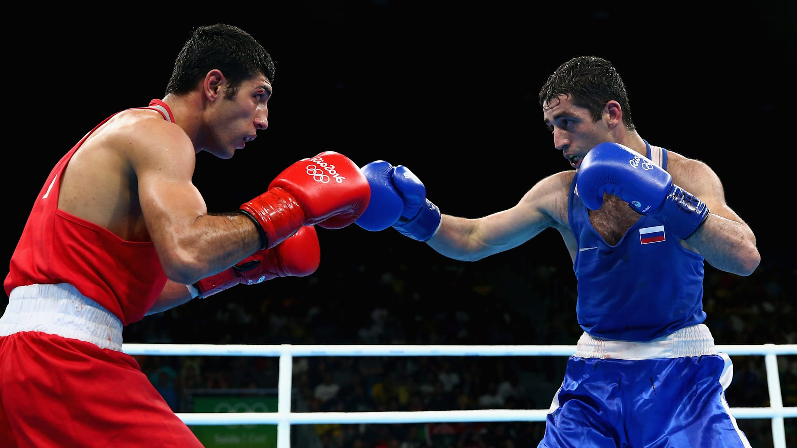
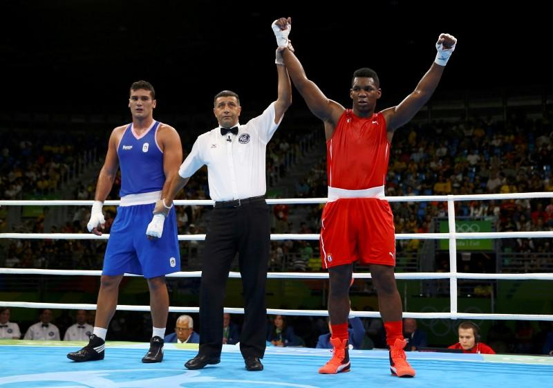

Boxing is a combat sport in which two people, usually wearing protective gloves and other protective equipment such as hand wraps and mouthguards, throw punches at each other for a predetermined amount of time in a boxing ring. Amateur boxing is both an Olympic and Commonwealth Games sport and is a standard fixture in most international games—it also has its own World Championships. Boxing is overseen by a referee over a series of one-to-three-minute intervals called rounds.
About Boxing
A winner can be resolved before the completion of the rounds when a referee deems an opponent incapable of continuing, disqualification of an opponent, or resignation of an opponent. When the fight reaches the end of its final round with both opponents still standing, the judges' scorecards determine the victor. In case both fighters gain equal scores from the judges, then professional bouts are considered a draw. In Olympic boxing, because a winner must be declared, judges award the contest to one fighter on technical criteria.
